ADS卒業制作発表
AI秘書「ホッシーくん」
チャットにリンクを送るだけで、帰宅したらすぐ編集できる環境構築。
目次
今日お話しすること
-
1
導入前の状況 （45秒動画）
-
2
解決してくれる面倒 （何をしてくれるか）
-
3
作りたいと思った理由
-
4
工夫したポイントと苦戦したポイント
-
5
半年間ADSで学んで得た気づき （一番大事）
-
6
メンバーへの感謝
導入前の困りごと再現VTR （45秒）
一旦、ここで
お仕事なんでも欲しがり ホッシーくん
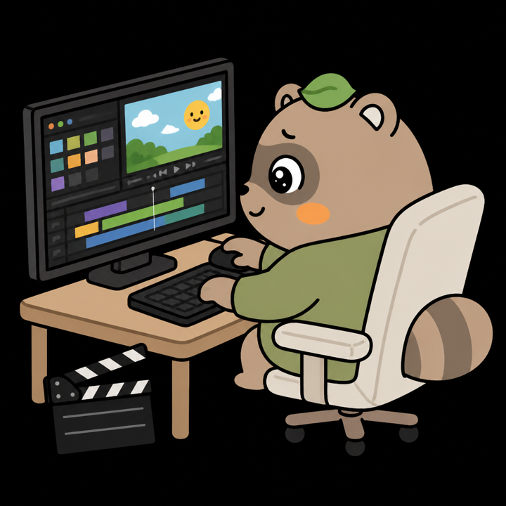
従来
帰宅してから、自分でダウンロードボタンを押す
出先では、何も始まらない。
従来
終わるまで、待つ
ダウンロードが完了するまで、編集は始められない。
いま実現したこと
リンクを送るだけで、自宅のMacが動き出す
自動でダウンロードが始まる。帰宅してから押して、待つ必要はない。
いま実現したこと
チャットは、Claude AIのスマホアプリ
外出先から、このアプリにリンクを送る。ダウンロードの指示は、Claudeが出す。
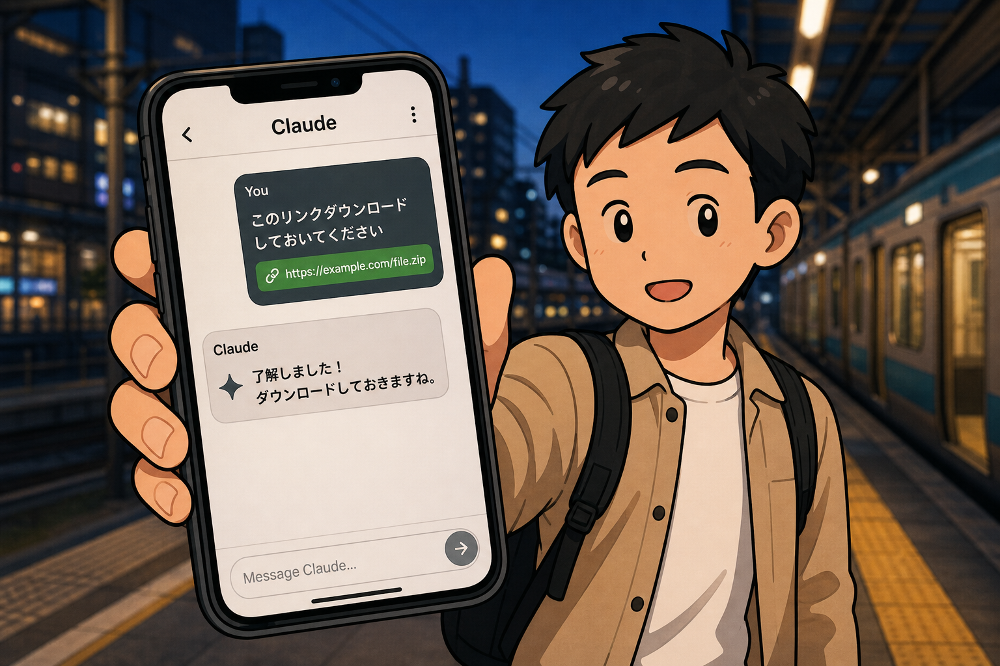
いま実現したこと
自宅のMacに、MCPサーバーを構築した
MCPサーバーとは、Claudeが家のMacに仕事を頼む窓口です。中身は Python プログラムです。
いま実現したこと
窓口を通ると、Macが手を動かす
Claudeから、MCPサーバー経由で、自宅のMacへ。
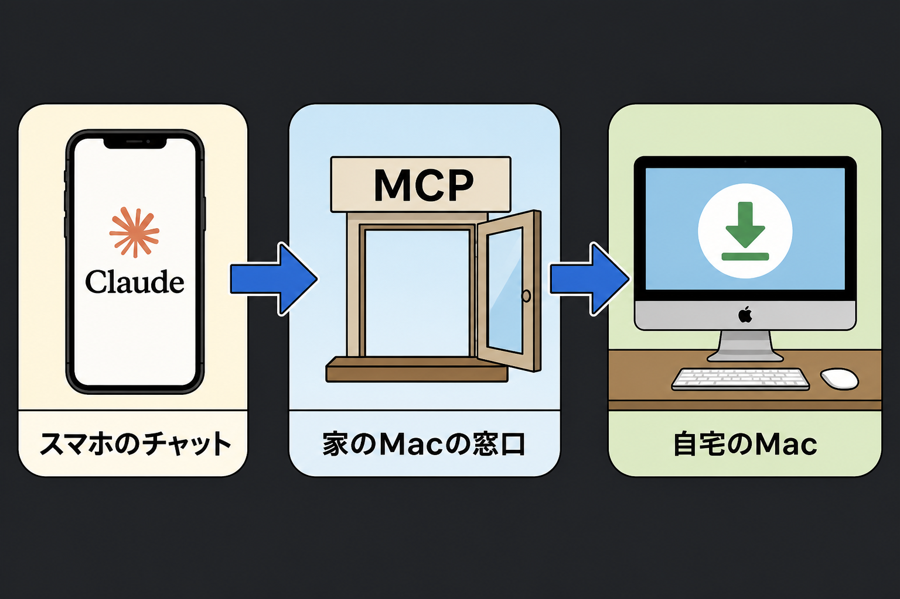
解決してくれる面倒
案件管理シートへ、ファイル名をコピペしていた
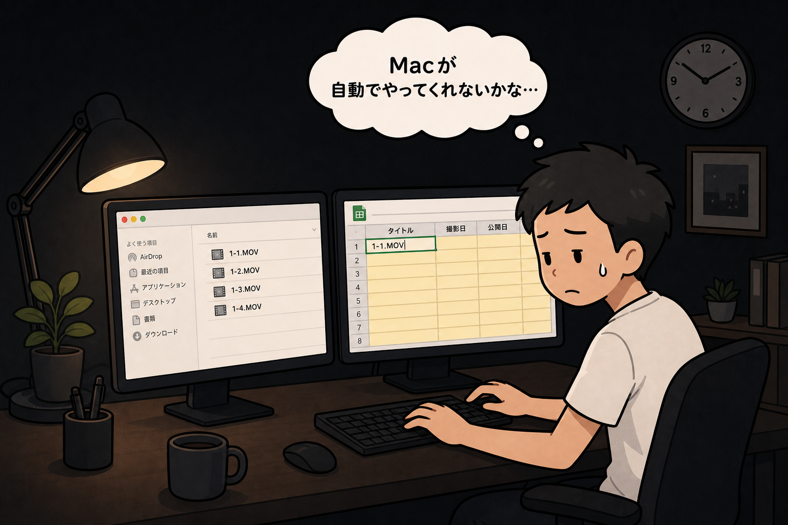
解決してくれる面倒
その転記も、自動化した
自宅Mac上の Python プログラムが、シートに直接書き込む。
解決してくれる面倒
Premiereに素材を取り込み、シーケンスを作っていた
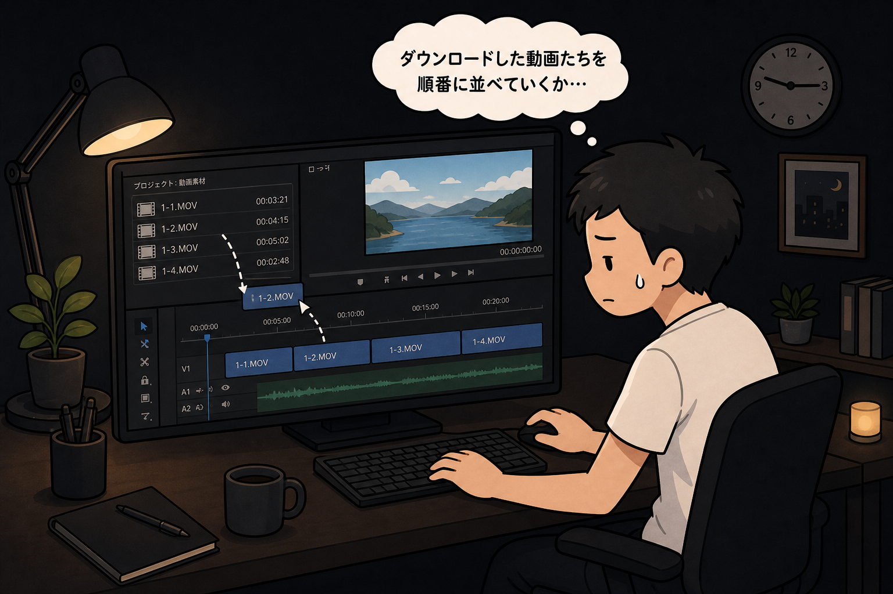
解決してくれる面倒
それも、自動化した
これも、Mac上の Python プログラムが Premiere を動かす。
解決してくれる面倒
編集を始めるまでの雑務を、全部やめた
解決してくれる面倒
帰宅するまでに、ここまでやっておく
- 動画をダウンロードする
- フォルダに整理する
- 案件管理シートへ転記する
- Premiereでシーケンス作成（タイムライン作成）
UI
専用モニターに、ホッシーくんがいる
作業の状態に合わせて、表情が変わる。
UI
待機中と、作業中
 待機中
待機中
 作業中
作業中
UI
待つときは寝る。仕事に入ると形が変わる
 待機仕事が来るまで
待機仕事が来るまで
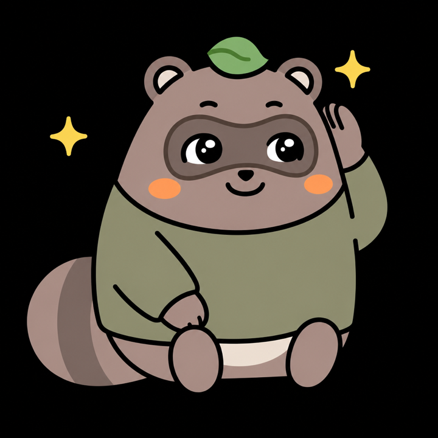
受信呼びかけを聞く
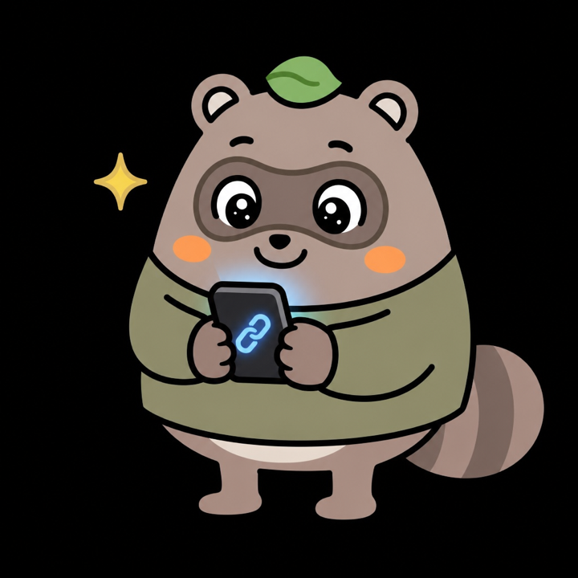
リンクURLを見つける
 ダウンロードZIPを家へ運ぶ
ダウンロードZIPを家へ運ぶ
 整理名前を読み取る
整理名前を読み取る
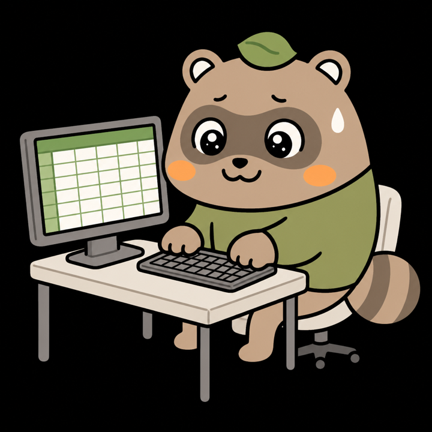
転記シートへ追記
Premiereシーケンス（タイムライン作成）
 完了お辞儀して待つ
完了お辞儀して待つ
作りたいと思った理由
クリエイティブな作業に、没頭したかった。
単純作業はAIに任せる。自分は企画作成や編集作業に集中したい。
工夫したポイント ／ 苦戦したポイント
いちばん苦戦したのは、外と家をつなぐこと
工夫したポイント ／ 苦戦したポイント
Claudeのチャットと、自宅のMacは、もともとつながっていない
外から家のパソコンへは、普通に入れません。
工夫したポイント ／ 苦戦したポイント
使った道具は、Cloudflare
外のチャットと、家のMacをつなぐためのツールです。
工夫したポイント ／ 苦戦したポイント
それが、トンネル
トンネル＝あいだに掘った穴。お願いごとは、ここを通って家に届きます。
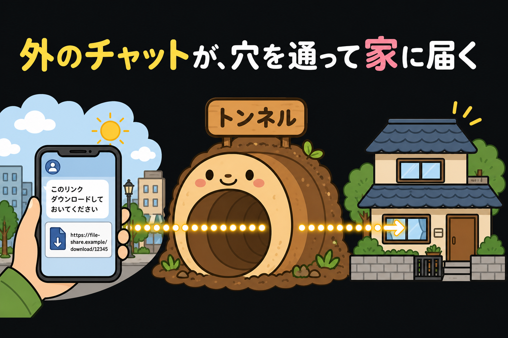
工夫したポイント ／ 苦戦したポイント
隣の家には届かない。自分のMacだけ
秘密の通路なので、ほかの人の家には入りません。
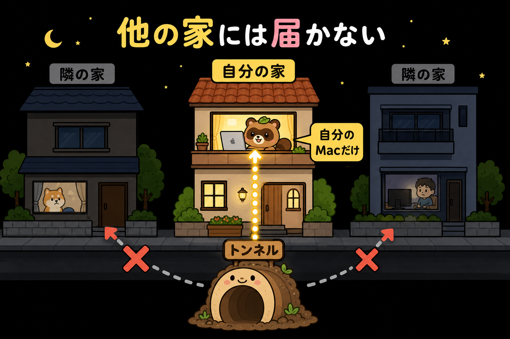
工夫したポイント ／ 苦戦したポイント
トンネルだけだと、届き先がわからない
Claudeは「どこに頼めばいいか」が必要です。
工夫したポイント ／ 苦戦したポイント
その届き先を、ここでは「住所」と呼ぶ
住所＝Claudeが家のMacを探すための宛先（URL）。
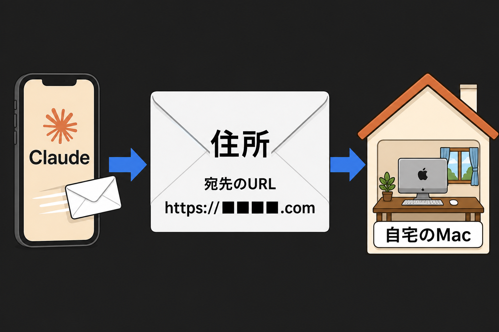
工夫したポイント ／ 苦戦したポイント
無料だと、Macを切るたびに住所が変わる
宛先が変わるたびに、Claudeへ「新しい住所です」と教え直す必要があった。
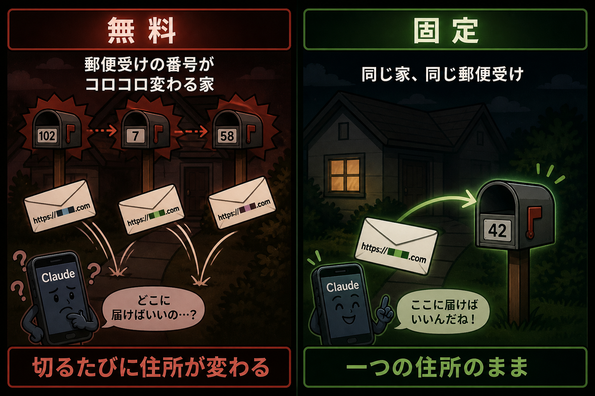
工夫したポイント ／ 苦戦したポイント
だから、ドメインで住所を固定した
Claudeが覚えるのは、この住所だけです。
https://hossy.■■■■■■.com/mcp
半年間ADSで学んで得た気づき
いまから、すごいベタなことを言います。
半年間ADSで学んで得た気づき
AIドリブンな人材の、
スタートラインに立っただけ。
半年間ADSで学んで得た気づき
正直、今回もそんな難しいものは作ってない。
半年間ADSで学んで得た気づき
勝負は、これから。
半年間ADSで学んで得た気づき
90点から100点の戦いに備えて、
自分のアイデアを形にできるようになった。
半年間ADSで学んで得た気づき
その自信が、ついた。
メンバーへの感謝
メンバーがいたから、ここまで来れた。
メンバーへの感謝
課題発表で「やってねーのかよw」って
思われたくない。その一心でやってこれた。
ドリルしかり。
メンバーへの感謝
皆さんには、本当に感謝します。
ありがとうございました！